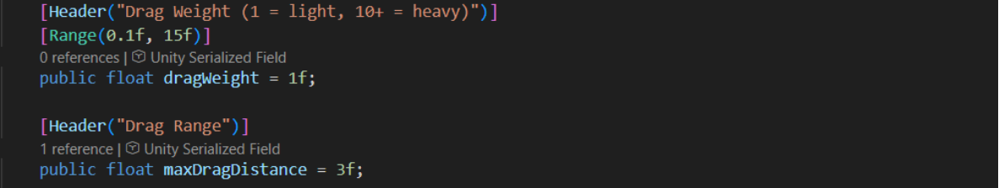

Projects
Here you will find a selection of my game development projects, where I focus on gameplay, interaction, and technical implementation.

A gameplay-focused project centered around fast-paced mechanics, ricochet interactions, movement systems, and combat experimentation.
The project focused heavily on responsive controls, gameplay feel, and satisfying combat feedback.
I made the ComboRewardManager and the SuperBallReward systems, focused on reward logic, gameplay feedback, and progression mechanics.
Code highlights
These screenshots explain how combo events build reusable reward bags and how the Super Ball reward is activated, timed, and shown to the player. Select an image to view the code larger.


GetOrCreateBag first checks whether a reward queue already exists for the combo level and contains rewards. If so, it returns that queue; otherwise, it starts building a new reward list.


Project overview
A vertical slice where a small but complete gameplay experience was built. Includes interactions, AI behavior, and a clear gameplay loop.
I created the gameplay scripts and programming systems used throughout the game, including interactions and mechanics implemented in Unity using C#.
Eindpresentatie images
Select an image to open a larger, clearer view. Press Escape or use the close button to return.

.png)
.png)
.png)
Schermafbeeldingen
These presentation slides pair in-game examples with the code and settings behind each feature. Select a slide to zoom in.


Gameplay


A horror-focused project designed around atmosphere, tension, environmental storytelling, and creating an unsettling player experience.
The focus was on immersion, suspense, environmental design, and psychological tension.
I made the movement system, audio components, and the locker script used throughout the game.
Horror game features
These selected code screenshots show how player movement, hiding, camera control, and interactive audio and lighting work. Select any image to view it larger.